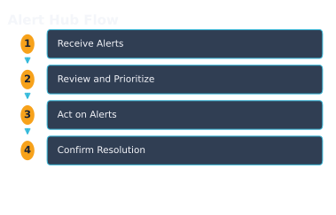
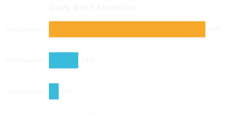

WorkHive Learn · Philippines
One Alert Inbox for the Whole Plant: Risk, PM, Stock, and the 6 AM Brief
Who this is for
- Field workers monitoring plant equipment daily
- Technicians performing routine maintenance and repairs
- Supervisors overseeing plant operations and teams
- Engineers designing and implementing plant systems
- Planners scheduling maintenance and resource allocation
- Plant managers responsible for overall plant performance
What's in this guide
One Inbox for All Plant Alerts
WorkHive's Alert Hub brings all your plant's alerts into one chronological inbox. This unified view helps supervisors and technicians stay on top of issues without being overwhelmed by scattered notifications. In the Alert Hub, you'll find five types of alerts: asset risk alerts, PM-due alerts, low-stock or reorder alerts, failure-pattern alerts, and automation alerts. For example, a supervisor at a manufacturing plant in Cabuyao can now see all alerts in one place, from equipment nearing failure to low stock levels.
The Alert Hub streamlines alert management, allowing you to prioritize and act on issues efficiently. You can view alert details with the 'Show details' button, and acknowledge or resolve alerts directly from the inbox. The AI compiles a daily brief, sent at 06:00 PHT, which provides a prioritized list of recommended actions. With a single tap, you can approve the brief, ensuring that your team addresses critical issues promptly.
Why a Unified Inbox Beats Scattered Notifications
A plant supervisor in a Philippine manufacturing plant typically receives numerous alerts from various systems, which can be overwhelming. These alerts may come from different sources, such as asset monitoring, preventive maintenance, and inventory management. Having multiple alerts scattered across different platforms can lead to alert fatigue, causing important notifications to be missed or ignored.
WorkHive's Alert Hub solves this problem by providing a unified inbox for all plant alerts. This single chronological inbox collects five types of alerts: asset risk alerts, PM-due alerts, low-stock/reorder alerts, failure-pattern alerts, and automation alerts. By having all alerts in one place, supervisors can efficiently prioritize and address issues, reducing the time spent on managing multiple systems and notifications.
With Alert Hub, a maintenance planner or shift in-charge can quickly identify and act on critical alerts, such as a sudden change in asset condition or a low-stock warning. By acknowledging or resolving an alert, they can clear it from the inbox and focus on other tasks. The unified inbox also helps to reduce duplicate efforts and ensures that all alerts are addressed in a timely manner, allowing the plant to run more smoothly and efficiently.
How Alert Hub Works: Receiving and Acting on Alerts
In a 24-hour shift schedule common in Philippine plants, supervisors and technicians must stay on top of equipment alerts. With Alert Hub in WorkHive, they can do just that. Alerts from various sources - asset risk, preventive maintenance due, low stock, failure patterns, and automation - all land in one chronological inbox. This unified view helps prevent supervisors from being overwhelmed by scattered notifications across multiple systems.
Here's how Alert Hub works:
- Alerts are generated based on predefined rules and conditions.
- The alerts appear in the Alert Hub inbox, which displays a list of all alerts.
- Users can view alert details by clicking Show details.
- To act on an alert, users can Acknowledge or Resolve it, which updates the alert status and affects the rest of the plant view.
- Users can also use Alert filters to categorize and prioritize alerts.
- At 06:00 PHT, the AI compiles a 5-sub-agent batched recommendation, the AMC Daily Brief, which supervisors can approve with a single tap using the Approve brief button.
By using Alert Hub, plant personnel can save time and focus on more critical tasks. For example, a supervisor at a Philippine plant can start their day with a clear view of all alerts and prioritize their response. As the plant's logbook and PM history grow, the alerts become sharper, providing more accurate insights without requiring a significant budget for implementation.

The 6 AM Brief: Prioritized Recommendations for Supervisors
Every morning at 6:00 AM, the AMC Daily Brief lands in your Alert Hub inbox. This prioritized list helps you tackle the most critical alerts first. For example, at a Philippine plant, Pump P-204B's increased vibration triggered a risk alert. The AI includes this in the brief, along with other pressing issues like PM-due alerts and low-stock warnings. You can quickly scan and approve the brief with one tap, letting the AI draft the initial response.
The AMC Daily Brief is a 5-sub-agent batched recommendation that your AI compiles overnight. This means you start the day with a clear plan, focusing on the most urgent issues. By approving the brief, you're directing the AI to take initial action. You can then review and act on each alert in more detail using the Alert Hub's 'Show details' feature. This streamlined process saves you time and helps you respond to plant issues promptly.
| Alert Type | AMC Daily Brief Priority |
|---|---|
| Asset Risk Alerts | High |
| PM-Due Alerts | Medium |
| Low-Stock/Reorder Alerts | Medium |

Zero-Budget Rollout: Improving Alerts Over Time
As you use Alert Hub in WorkHive, its alerts get sharper over time, with no extra budget needed. For example, a plant in Calabarzon, known for its industrial estates, started with basic alerts. But as they logged more issues and performed preventive maintenance, their alerts became more accurate. This is because Alert Hub learns from your plant's history, improving its alerts without requiring additional spending.
The more you use Alert Hub, the better it gets at identifying critical issues. Your team's past actions, like resolving alerts and performing maintenance, help refine the system. This means you get more relevant alerts, and your team can focus on addressing real problems. When you act on an alert, it clears and affects the rest of the plant view, giving you a clearer picture of your operations.
By using your plant's growing logbook and PM history, Alert Hub's AI improves its alert recommendations. This leads to a more streamlined alert inbox and a better daily brief. With Alert Hub, your AI watches the plant so you don't have to, saving you time and effort. This is the power of building your own AI with WorkHive, helping you make the most of your resources.
From Alert to Resolution: The Impact on Plant View
When a plant supervisor acts on an alert in WorkHive's Alert Hub, it directly impacts the rest of the plant view. For instance, resolving a PM-due alert for a critical asset updates the asset's status, reflecting that maintenance is now overdue or completed. This change helps the supervisor and other team members quickly understand the asset's current condition and plan accordingly.
Acting on an alert also clears it from the inbox, reducing clutter and ensuring that only outstanding issues remain visible. In the case of a low-stock alert, acknowledging it and taking corrective action removes the alert, providing a clear view of current inventory levels and avoiding unnecessary stockouts. By streamlining alert management, Alert Hub helps maintenance planners and reliability engineers focus on priority tasks.
Open the tool: Alert Hub is the WorkHive surface this guide funnels into. It is free at the worker tier, works offline, and is built for Philippine plants.
Open Alert Hub →Frequently asked questions
What types of alerts are included in Alert Hub?
How does the 6 AM Brief help supervisors?
Can I customize the alerts in Alert Hub?
How does Alert Hub affect plant operations?
Is Alert Hub compatible with existing systems?
What kind of support does WorkHive offer for Alert Hub?
Sources
- ISO 14224:2016 (Reliability and maintenance data exchange)
- SMRP CMRP BoK (Maintenance and Reliability Body of Knowledge)
- TESDA (Technical Education and Skills Development Authority of the Philippines)
- Related WorkHive guides: Autonomous shift planning · Predictive alert thresholds · Predictive maintenance on a budget